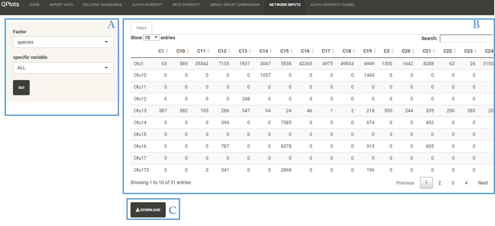

This section aims to combine an OTUs table with assigned taxonomy for all/part of the samples according to categorical variable selected.
User Interface

- A: Dynamic Input
- B: Output table
- C: Download table in TXT format
Options
- Factor: Select factor from the categorial variables in mapping file
- Specific variable: Choose one element (all elements) from categorical variable selected.